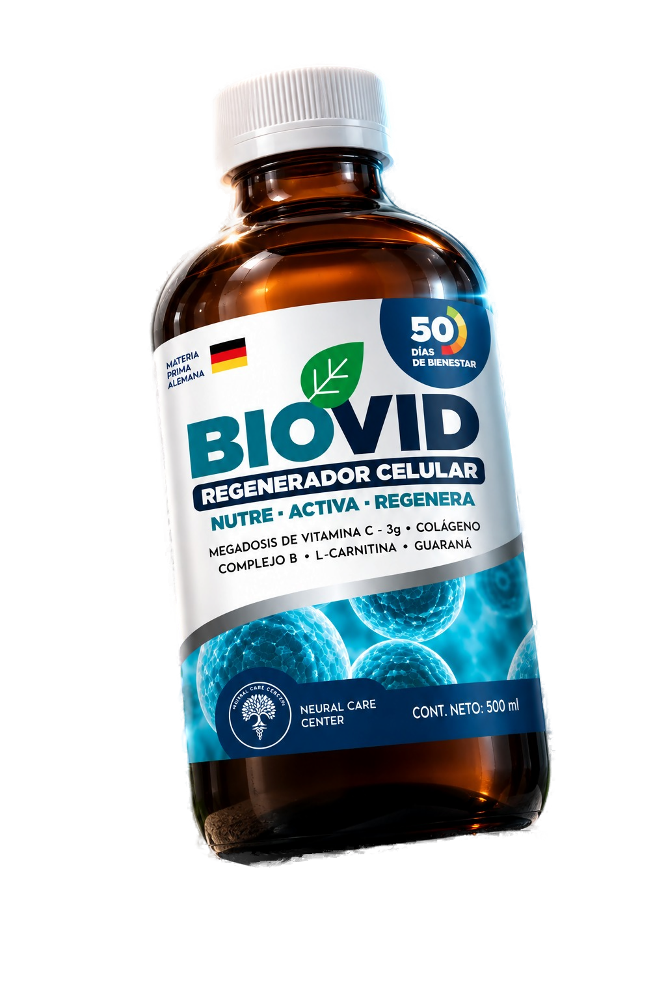
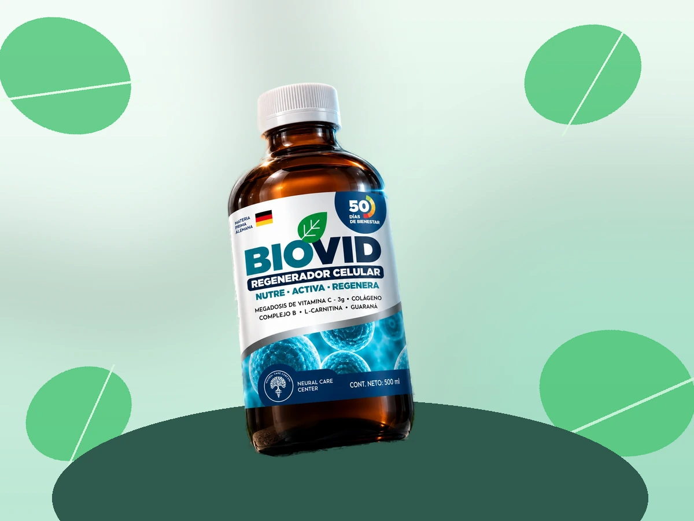

01
Activa tu energía
Guaraná y L-carnitina apoyan el metabolismo energético y la vitalidad diaria.
Ciencia natural para un mejor mañana
BIOVID combina nutrientes esenciales en una fórmula líquida pensada para acompañar tu energía, tus defensas y la regeneración natural de tus células.

La diferencia está en la sinergia
No se trata de sumar ingredientes. Se trata de unirlos para que cada uno cumpla su función y el conjunto acompañe mejor las necesidades de tu organismo.
Ver qué contiene ↘Apoyo integral, todos los días
Una rutina de bienestar empieza por cuidar lo que pasa dentro de ti.
Guaraná y L-carnitina apoyan el metabolismo energético y la vitalidad diaria.
Vitamina C y glutatión acompañan la respuesta antioxidante natural del organismo.
Colágeno vegetal y complejo B aportan soporte para tu bienestar estructural y metabólico.
Lo que pones dentro importa
Una formulación líquida creada para integrarse fácilmente a tu rutina de bienestar.
Tu nuevo ritual
Haz de tu bienestar una decisión diaria. BIOVID llega listo para acompañarte de forma simple, práctica y consistente.
Inclúyelo en tu rutina según la orientación de tu profesional de salud.
Convierte el cuidado interno en energía para tus días.
Cuida tu cuerpo hoy para seguir disfrutando mañana.

Resolvemos tus dudas
Es una formulación líquida de apoyo nutricional que combina vitamina C, guaraná, L-carnitina, complejo B, glutatión y colágeno vegetal.
La forma de uso debe definirse con la orientación de un profesional de salud, considerando tu historia clínica y tus necesidades.
Consulta siempre antes de usarlo si estás embarazada, lactando, tomas medicación o tienes una condición médica diagnosticada.
Empieza con una conversación
*La expresión “50 días de bienestar” corresponde a la duración referencial indicada en el material del producto. BIOVID es un suplemento de apoyo nutricional y no pretende diagnosticar, tratar o curar enfermedades. No sustituye una alimentación equilibrada ni la indicación de un profesional de salud.